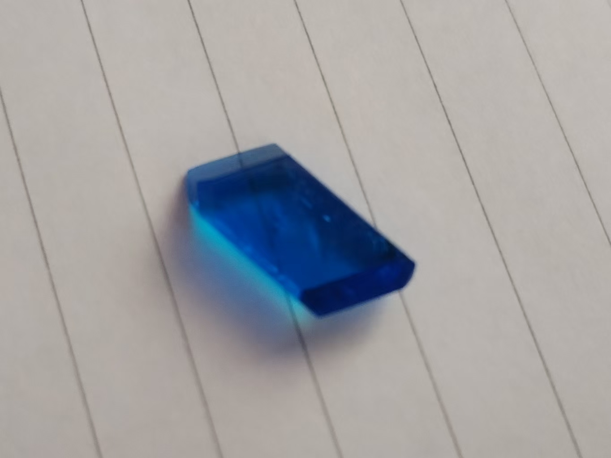

晶体化学指南
硫酸铜篇

图源：食堂人民科学协会-荣
🎯 预览
项目概览：
- 难度等级：★☆☆☆☆ (入门级)
- 培养周期：2-3周
- 成功率：85%+
- 推荐人群：零基础新手
所需材料：
- 硫酸铜
- 玻璃培养皿或烧杯
- 蒸馏水
- 过滤材料
一、基础认识
1.1 化学特性
化学式：无水硫酸铜（白色粉末）为 CuSO4；常见的是蓝色五水合物 CuSO4·5H2O
外观特征
蓝色透明晶体，具有宝石般光泽
溶解性
20℃时，100g水能溶解约32g，溶液呈蓝色
晶系
正交晶系（斜方晶系）
1.2 结构特点
水合结构
蓝色晶体中的铜离子被4个水分子包围，第5个水分子通过"水桥"连接其他结构
热稳定性
加热到110℃会失去结晶水，变成白色粉末（可逆反应）
二、实验与制备
2.1 配制溶液（示例）
目标：配制1升浓度为0.5mol/L的硫酸铜溶液
计算
需称量 0.5mol × 249.7g/mol ≈ 124.9g 五水硫酸铜
溶解
将晶体加入烧杯，加500mL温水搅拌至完全溶解
定容
转移至1L容量瓶，加水至刻度线，摇匀
2.2 晶体生长
💡 平底结晶法
材料：电镀硫酸铜、培养皿、过滤材料、镊子（塑料、镀镍）
配制溶液
饱和溶液配置：取适量常温水，分次加入硫酸铜并加热至不再溶解
不太推荐新手直接配热饱和，配不饱和溶液就好
虽然出晶效率慢 但容错率高
饱和溶液/过饱和，配完溶液后1~3小时内就要取出晶体
且过程中对震动非常敏感，容易出现大量粘连碎晶。
虽然出晶效率慢 但容错率高
饱和溶液/过饱和，配完溶液后1~3小时内就要取出晶体
且过程中对震动非常敏感，容易出现大量粘连碎晶。
过滤
用眼镜布或其他滤纸过滤溶液，去除溶液杂质
操作
将溶液低角度缓慢倒入培养皿，覆盖防尘材料，静置1-2天
注意事项：
- 避免震动，注意温差不要过大（可包裹保温棉/保利龙）
- 若溶液浑浊或析出多过碎晶，需重新过滤或更换溶液
- 避免震动，注意温差不要过大（可包裹保温棉/保利龙）
- 若溶液浑浊或析出多过碎晶，需重新过滤或更换溶液
晶体处理
用镊子夹取晶体，纸巾轻压吸干表面溶液
此时可以选择停止、也可以重复下方步骤使晶体更大
💡 进阶（有两个选项）
选项一
配制热饱和溶液：60℃热水中持续加入硫酸铜至无法溶解
选项二
可以用回上次的溶液，再次过滤后可以选择悬挂晶核、或者在培养皿上放入晶核（一个培养皿最多5个）
倒入盖过晶核两倍的溶液（略慢于选项1）
倒入盖过晶核两倍的溶液（略慢于选项1）
此时晶核应该会慢慢生长，过约两天后可取出
三、安全与注意事项
3.1 危险性
- 毒性：误食会引起恶心、腹痛；接触眼睛会导致刺激
- 环境：对水生生物有害，不可随意倾倒
3.2 防护与应急
- 操作时：戴手套和护目镜，在通风处使用
- 泄漏处理：用沙土覆盖后清扫，废料装入密封袋
- 急救：误触眼睛立即用清水冲洗15分钟，及时就医
四、成果展示与质量评估
优质晶体特征
优质晶体：
- 棱角分明，晶面平整
- 透明度高，内部无杂质
- 颜色均匀，呈鲜艳蓝色
- 尺寸均匀，无畸形生长
问题晶体：
- 表面白雾 - 浓度过高
- 生长纹 - 温度波动
- 颜色不均 - 杂质影响
- 畸形生长 - 震动干扰
五、问题诊断与解决
常见问题排查
问题一：晶体生长缓慢
- 可能原因：温度过低、溶液浓度不足、震动干扰
- 解决方案：提高环境温度至25-30℃，补充少量溶质，确保放置位置无震动
问题二：晶体表面粗糙
- 可能原因：溶液杂质过多、生长速度过快
- 解决方案：重新过滤溶液，降低培养温度2-3℃
问题三：形成"大饼"现象
- 可能原因：结晶过快、杂质过多、震动干扰
- 解决方案：使用不饱和溶液，增加过滤次数，放置减震材料
六、品牌推荐
别贪小便宜
- 千万贪小便宜而买到劣质/假的硫酸铜（站主买过会挥发刺激性气味的....）
- 解决方案：使用不饱和溶液，增加过滤次数，放置减震材料
推荐厂家
天津华盛、天津众联、西陇
市售硫酸铜
图源：食堂人民科学协会-荣
七、奇特混晶
图源：冰麒麟
7.1 混晶1
外观变化
此为电镀硫酸铜，硫酸铬钾，硫酸铝钾混合后而成
成品虽任近似斜方晶体，但晶体更厚、更高且形态趋于细长。
成品虽任近似斜方晶体，但晶体更厚、更高且形态趋于细长。
混合溶液
以电镀硫酸铜过饱和溶液为基底，缓慢加入硫酸铭钾与硫酸铝钾混合溶液后，溶液颜色由深蓝转为幽绿色
静待结果
据此，你获得了神奇的硫酸铜变种